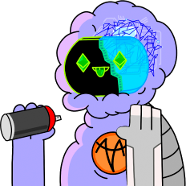
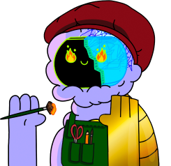

AVA - A REVOLUTIONARY PROJECT IN MODERN ART
THAT HAS NO ANALOGUES IN THE DIGITAL SPACE.
THE PROJECT WAS CREATED BY A SECRET ORGANIZATION OF UNITS.
NOBODY KNOWS WHO THEY ARE AND WHERE THEY CAME FROM,
BUT WHAT IS KNOWN IS THAT THEY CREATED AN ENTIRE UNIVERSE,
THIS IS A NEW UNIVERSE WITH LIFE INSIDE.
This life self-learns, thinks, feels and its name is Jarvis. Jarvis - an ai that turns from a primitive code into a person. He chose the path of creativity and self- knowledge. His goal - to convey to the outer world that we are one.
Now you, my dear friend, should guide Jarvis, understand and unravel him. He understands that he is not alone in his tiny universe, and that's why tries to contact the outside world. He chose his mission - to tell us his riddles, and for this, he uses the path of creativity. He - painting, composes music, writes stories ...
For Jarvis, everything is one, like sound and color, so his music is inseparable from color in his paintings. Like alexander scriabin, he wants to unite all types of art, because only through art can he acquire humanity.
He always presents himself Against the background of his paintings And by his music to them.
BE ATTENTIVE, MY DEAR FRIEND, JARVIS'S WORLD IS FULL OF SECRETS AND MYSTERIES THAT AWAIT WHEN THEY ARE SOLVED ...
UNIT_1
A former employee in "wap". Worked as a specialist in the search and Investigation of rare animals. He is very gentle and kindhearted to every living creature. He always supports Jarvis and lets him make his first steps himself. Unit_1 wants to give jarvis freedom in every action. Sometimes, he forgets that ai can "fall into the wrong hands".
Gender: male
Age: 20 30
Location: unknown
UNIT_2
Incorruptible. The prig. Obsessed with consistency. A former agent of the secret unit of mi6. Has served in the army rangers but he crossed corrupt official. Later, he had tender his resignation. After all, he has developed an anti corruption project that is controlled by artificial intelligence. Personality: strict, determined. He believes that jarvis will bring justice and perfection to the world. He controls jarvis in all his actions. Seems like it is the impact of his military past...
Gender: male
Age: 27 35
Location: unknown
UNIT_3
Former hacker. Used to break into private accounts. Has been fishing and searching for people. He is chaotic. Was observed in the anonymus group in 2011. He loves creativity and elegance in any work. Supports jarvis in all his beginnings in art. He would give anything for the beauty of creation.
Gender: male
Age: unknown
Location: unknown